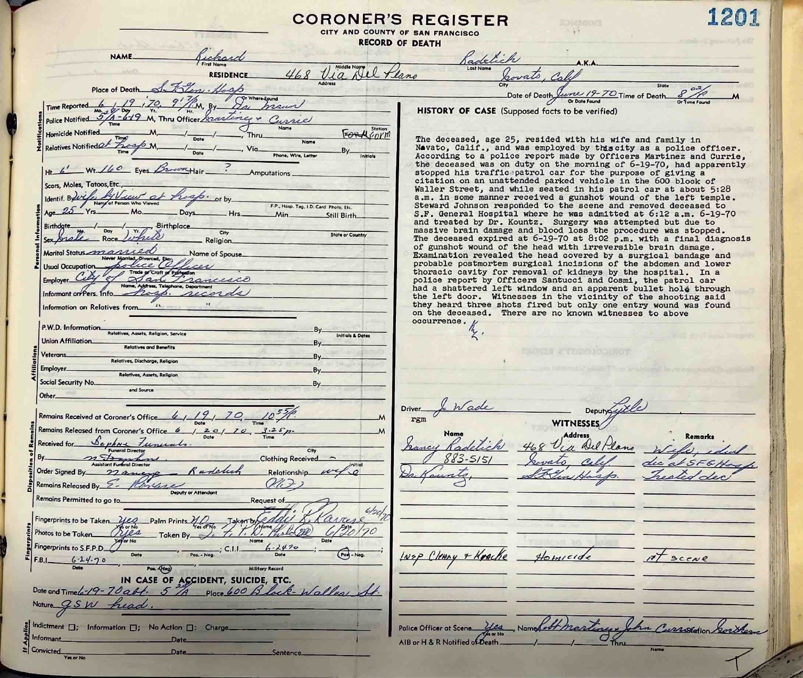
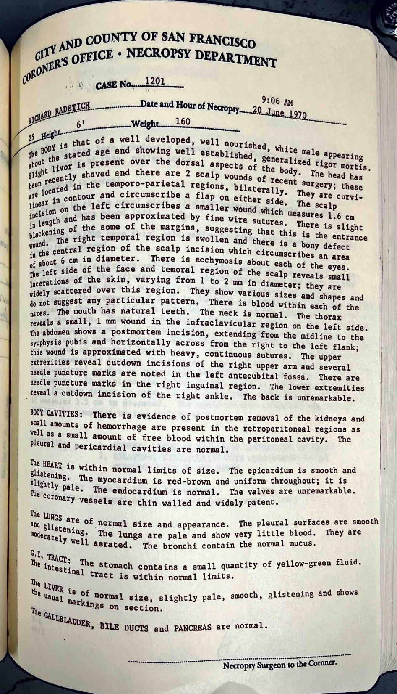
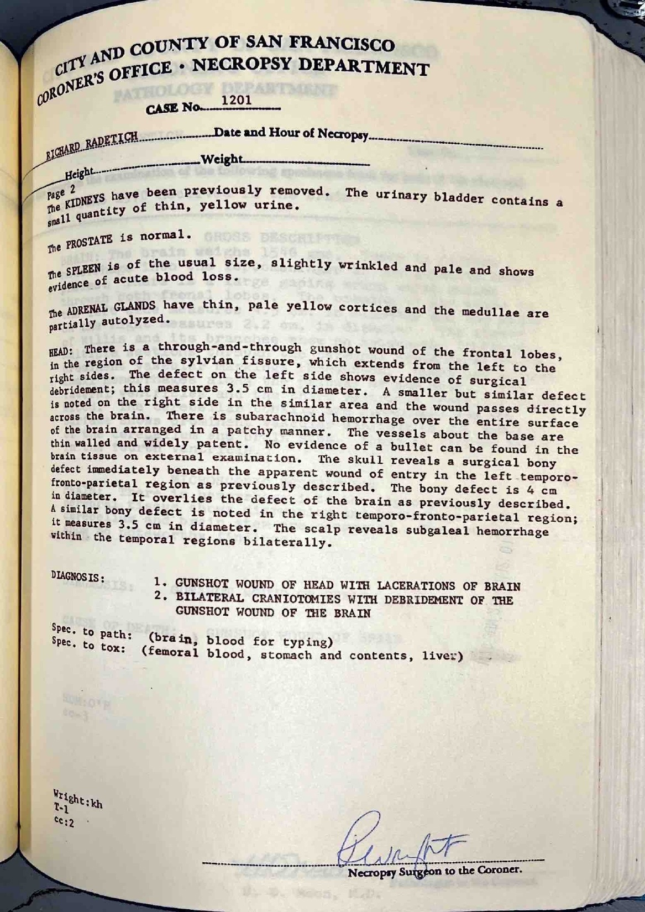
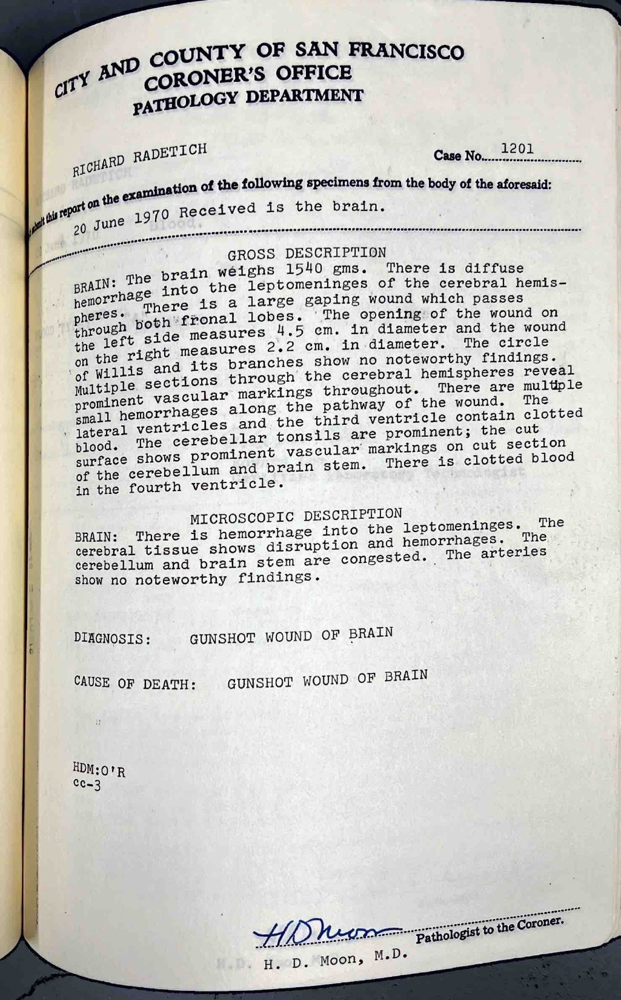
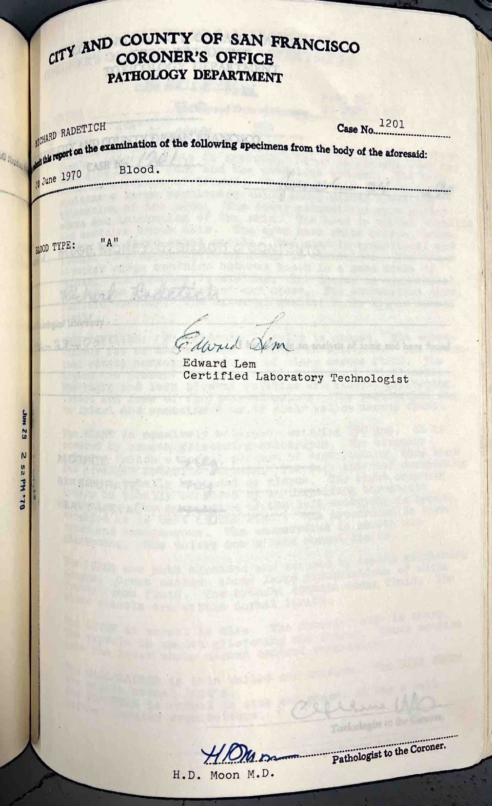
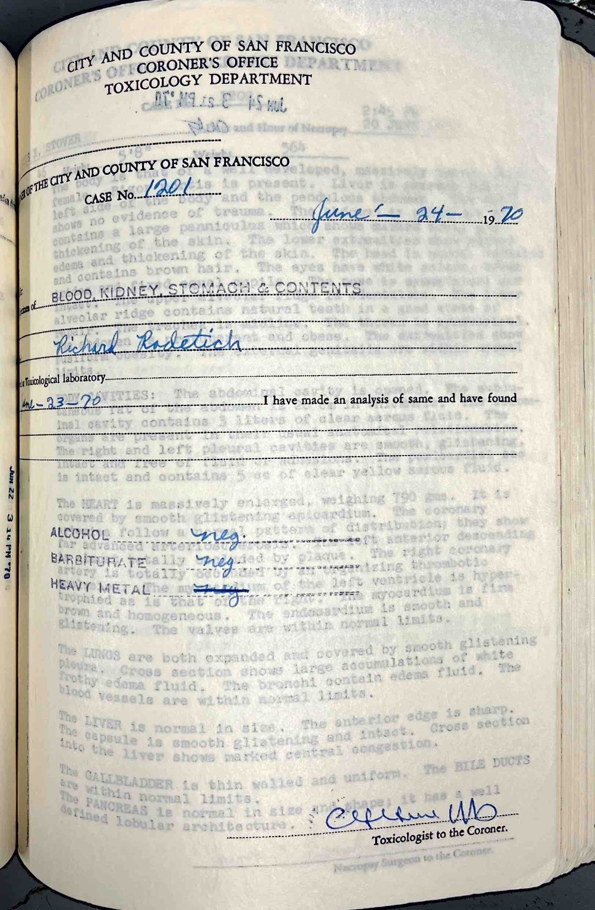

Dave's note: This page and images were missing from the Wayback Machine snapshot of Howard's site. These images come from were provided to me by "Just Human" (Jill Valentine), who got them from John Bowman.






(Go Back)